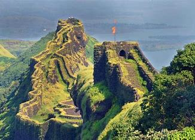

Rajgad Fort
Rajgad Fort, located near Pune in Maharashtra, India, is one of the major forts associated with the Maratha Empire and Chhatrapati Shivaji Maharaj. Here are some key details about Rajgad Fort:
History
- Built By: Rajgad Fort was initially built by the Yadava dynasty in the 12th century and later expanded by Shivaji Maharaj in the 17th century.
- Significance: The fort served as the capital of the Maratha Empire for several years and witnessed important events, including strategic military campaigns and administrative decisions.
Architecture
- Design: Rajgad Fort is known for its extensive fortifications, including large bastions, gates, and reservoirs. It has a strategic layout that facilitated defense and governance.
- Notable Structures: Key attractions within the fort include the Bale Killa (citadel), Padmavati Temple, and the tomb of Shivaji Maharaj's trusted general, Tanaji Malusare.
Location
- Coordinates: 18.2508° N, 73.6831° E
- Elevation: Rajgad Fort is situated at an elevation of about 1,400 meters (4,600 feet) above sea level, offering panoramic views of the Sahyadri mountain range.
- Nearby Attractions: The fort is located near the Torna Fort and the historic town of Pali, known for its ancient temples and cultural heritage.
Trekking
- Difficulty Level: The trek to Rajgad Fort is moderate to difficult, with steep ascents and rocky paths leading to the summit.
- Duration: It typically takes about 2-3 hours to reach the top from the base village, Velhe.
- Best Time to Visit: The best time to visit Rajgad Fort is during the post-monsoon and winter seasons (October to February) when the weather is cool and the surroundings are lush green.
Points of Interest
- Panoramic Views: Visitors can enjoy stunning views of the surrounding valleys, lakes, and hills from various viewpoints on Rajgad Fort.
- Historic Structures: The fort boasts ancient monuments, water tanks, and remnants of residential quarters that offer insights into its historical significance.
Rajgad Fort stands as a symbol of courage and resilience, reflecting the glorious history of the Maratha Empire under Shivaji Maharaj's leadership.